Edge AI inference for repetitive tasks, such as object presence, sound classification, sensor thresholding; runs millions of times a day on devices where every watt of energy, and every millisecond spent matters. A dedicated analog circuit performs the same inference as a neural network using only Ohm's law and Kirchhoff's current law to perform math: MOSFETs multiply, a summing junction adds, and an op-amp applies the activation. No clock, no fetch-decode-execute, no switching losses. No matrices needed; physics itself handles the computation—a continuous stream of inputs yields matrix-like outputs in real time, with the mathematics unfolding naturally through the circuit's behavior.
This project demonstrates the full pipeline: training of a neural network in PyTorch, extraction of the weights, mapping them to the MOSFETs, verify each neuron with a DC sweep in ngspice, and confirm correct classification on all test inputs.
Each neuron implements a weighted sum via MOSFETs feeding into an op-amp summing node. Positive weights feed into the non-inverting input; negative weights feed into the inverting input of the summing op-amp, directly encoding the network's weight matrix. Bias is a DC source through a high-value pull resistor. The tanh activation is realized using antiparallel diodes, whose exponential I-V characteristic approximates the nonlinear response.: V = V_MID + swing·tanh(gain·V(SUM)).
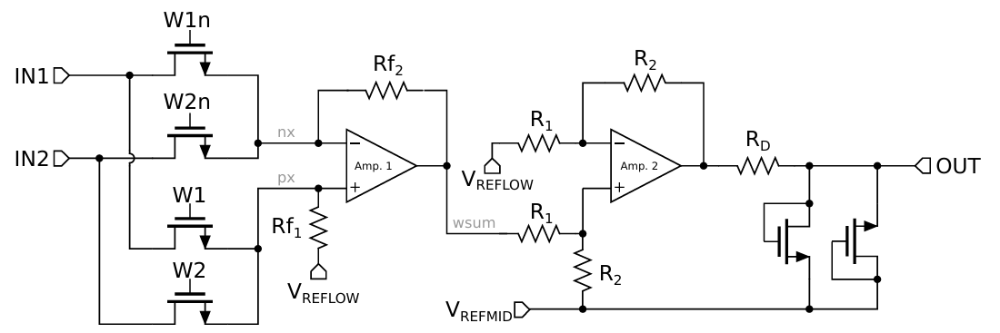
The XOR function is non-linearly separable — it cannot be solved by a single perceptron — making it a canonical test for multi-layer analog networks. Three hidden neurons and one output neuron, all implemented as the circuit above, chained together.
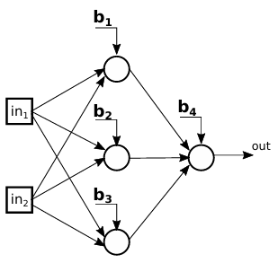
XOR Results — 0–5 V domain
| Input [V] | Measured [V] | Class |
|---|---|---|
| [0.0, 0.0] | 0.63 | LOW — 0 |
| [0.0, 5.0] | 3.76 | HIGH — 1 |
| [5.0, 0.0] | 3.61 | HIGH — 1 |
| [5.0, 5.0] | 0.50 | LOW — 0 |
Threshold: HIGH >2.0 V / LOW <1.4 V. 4/4 correct.
DC sweep output surfaces for each hidden neuron — each plots V(out) across the Va×Vb input space, confirming the learned response function is correctly encoded in the resistor network.
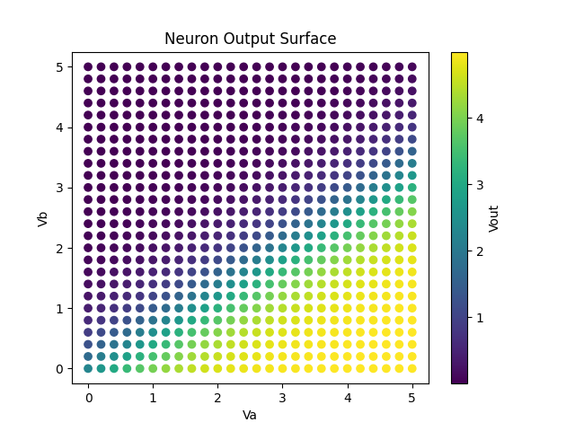
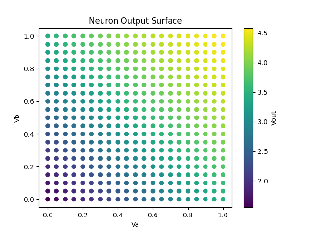
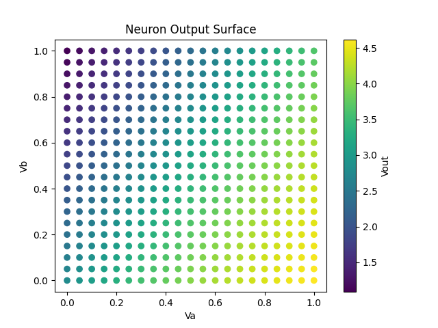
Raw ngspice DC sweep traces for each hidden neuron — V(out) vs V(v-sweep) for all VB steps:
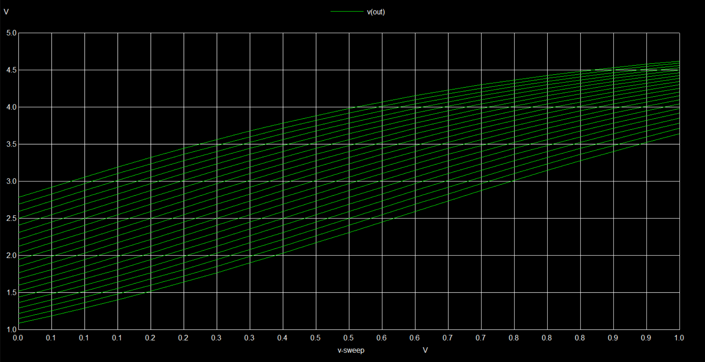
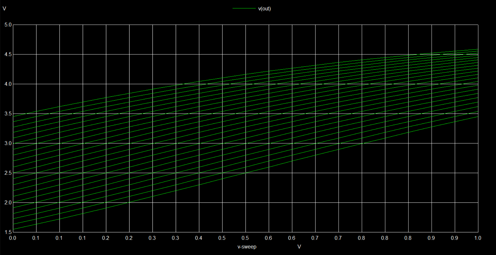
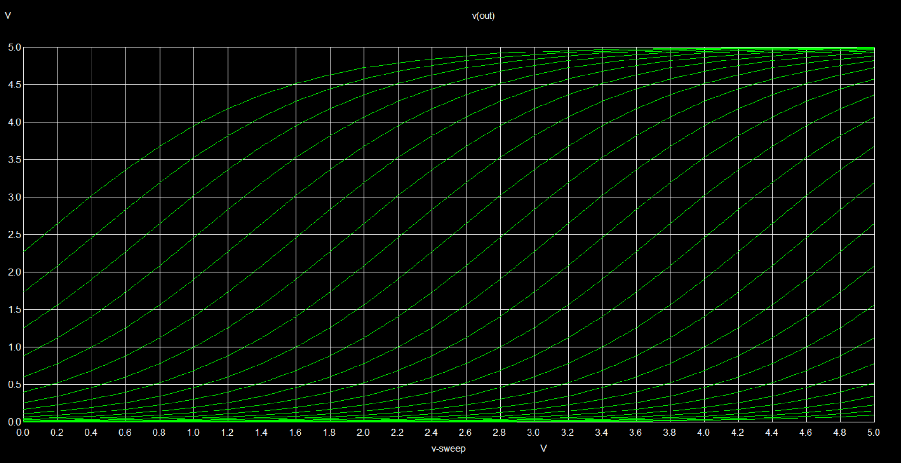
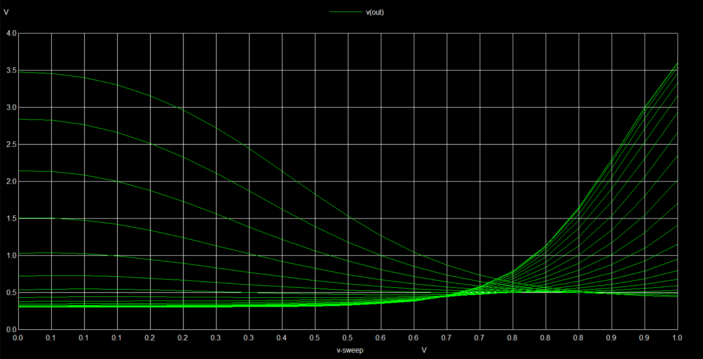
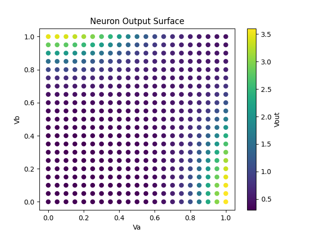
Extended to the Iris dataset: 4 input features (sepal/petal length and width), 6 hidden neurons, 3 output neurons (one per species class). The IrisNN model was trained with full-batch gradient descent (lr=1.0, 20,000 epochs, cross-entropy loss), achieving 98.7% test accuracy and 96.7% test accuracy(5/149 misclassified). Weights were exported, normalised to the 0–1 V voltage domain via MinMaxScaler, and instantiated as a full ngspice netlist for operating-point verification.
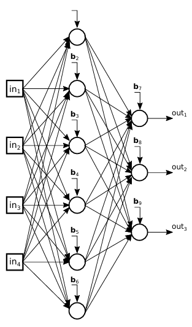